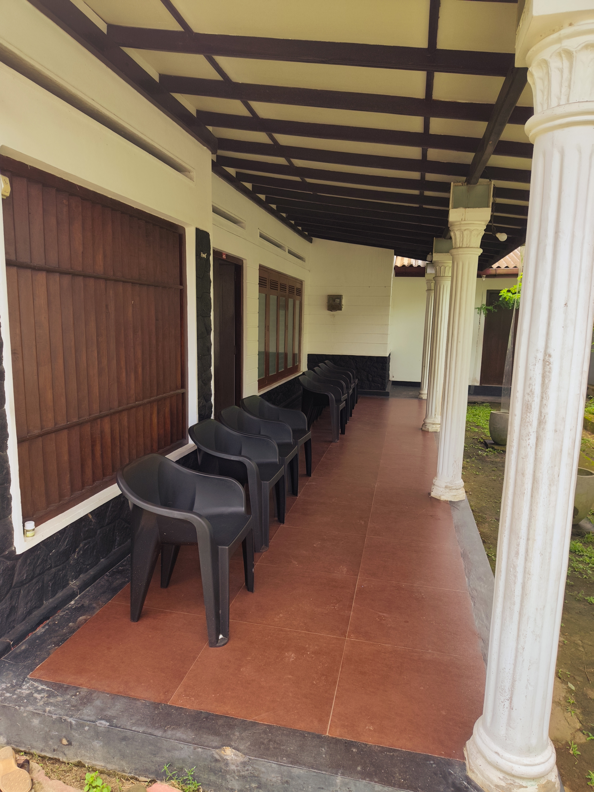
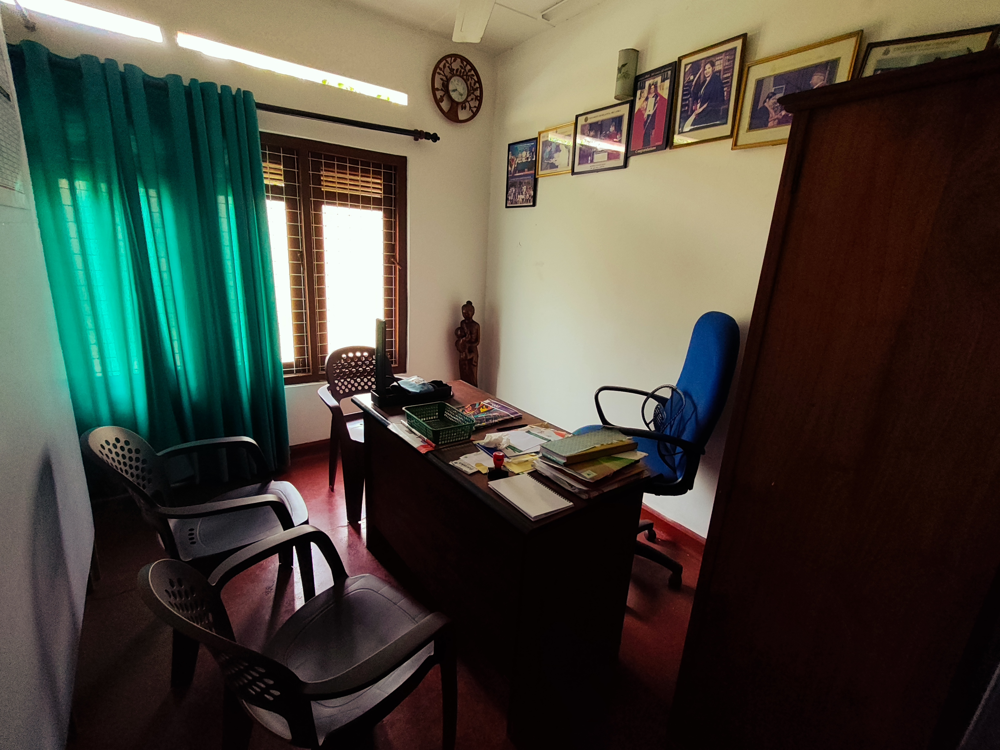
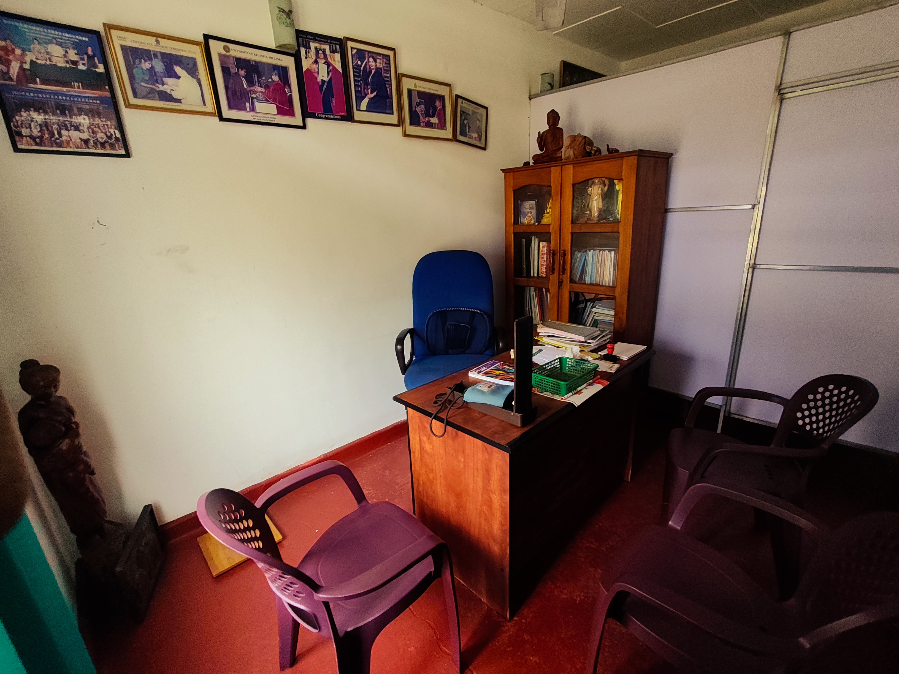
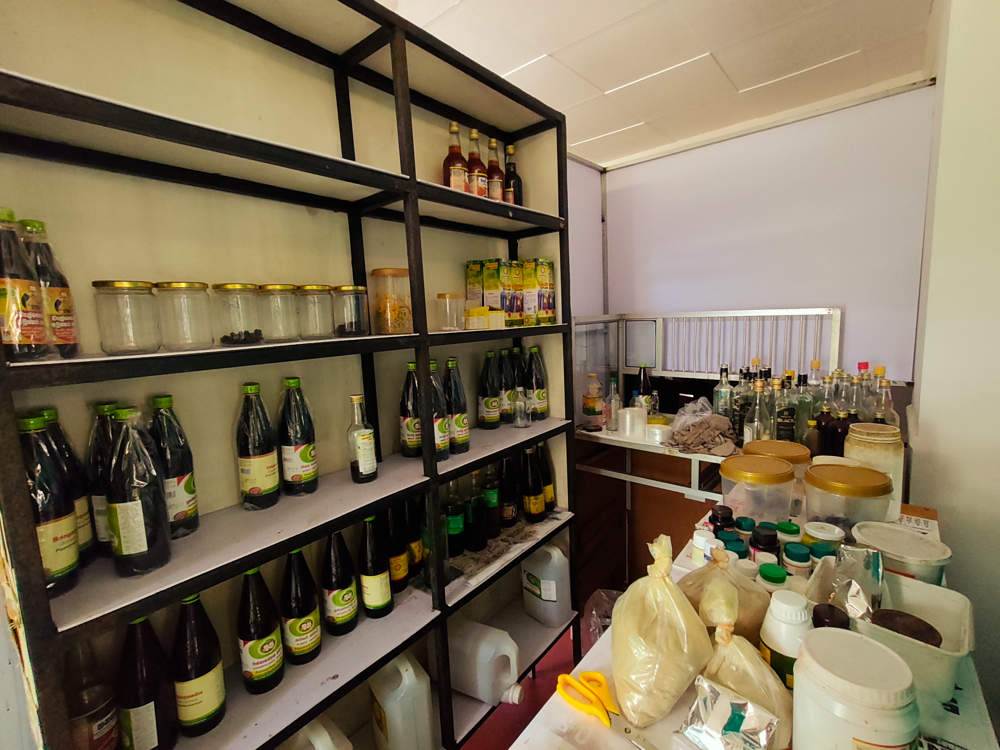
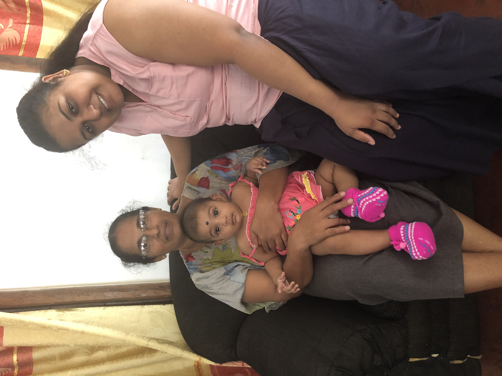

SUWAYU Gallery
A closer look at our care.
Explore the peaceful environment, traditional Ayurvedic therapies and moments of care at SUWAYU Ayurveda Medical Center.
Our gallery
Tradition, care and wellbeing.
A visual collection of our clinic, treatments and Ayurvedic approach to holistic wellbeing.




Treatments
Traditional care in practice.
Real moments from Ayurvedic treatments performed by our doctor. Treatment photographs can be added here later.



Experience SUWAYU
Begin your journey toward balanced wellbeing.
Speak with us about your concerns and discover an Ayurvedic approach tailored to you.
Book a Consultation